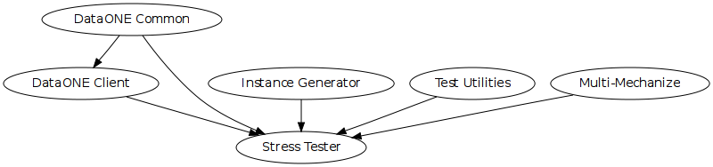

The Member Node Stress Tester is a system that generates synthetic queries for Member Nodes. It can load test DataONE Member Node APIs such as MNCore.getLogRecords(), MNRead.listObjects() and MNStorage.create().

Note: The Stress Tester only checks the performance of the APIs, it does not check that the information returned by the APIs is valid.